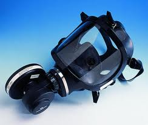
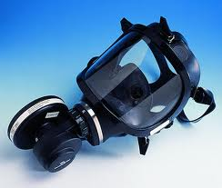

>Test d'ajustement des masques de protection respiratoire.
Réalisez, où et quand vous le souhaitez, un test d'ajustement des masques de vos salariés.
Une obligation légale depuis le 7 mars 2013 : Arrêté du 7 mars 2013
Le principe :
L'appareil mesure la concentration en particules ultrafines (particules/cm3) à l'intérieur et
à l'extérieur du masque et calcule le Fit Factor (rapport des 2 mesures). Comme pour toutes les
techniques quantitatives du Fit Testing, le masque doit être équipé avec des filtres haute efficacité.
Avec l'utilisation de filtres haute efficacité, les quelques particules décelées à l'intérieur du masque
peuvent être attribuées à des fuites au niveau de l'étanchéité du masque sur le visage. Les particules
pénètrent dans l'appareil, passent à travers un tube de saturation, où elles sont combinées à
des vapeurs d'alcool. L'alcool se condense, et chaque particule est enveloppée dans une grosse
gouttelette. Ces gouttelettes passent au travers d'un faisceau laser focalisé, entraînant un
obscurcissement de la lumière, détecté par un photo détecteur. Cette capacité à compter chaque
particule individuellement différencie le Portacount de toutes les autres techniques de Fit Testing. De
plus, le Portacount détecte de très faibles concentrations, ce qui permet son utilisation à partir
d'aérosols ambiants, et élimine ainsi l'obligation de générer de fortes concentrations d'aérosols dans
une enceinte ou dans une tente..
Déroulement du test :
Le test va se dérouler sur 8 fois 1 minute 1/2 pour chaque opérateur et pour chaque masque utilisé
- 1 ) Respiration normale
- 2 ) Respiration profonde
- 3 ) Tête de droite à gauche
- 4 ) Tête de haut en bas
- 5 ) Parler
- 6 ) Grimacer
- 7 ) Debout, se pencher en avant et se relever
- 8 ) Respiration normale
Dans tous les cas la valeur de rapport doit rester supérieure 500.